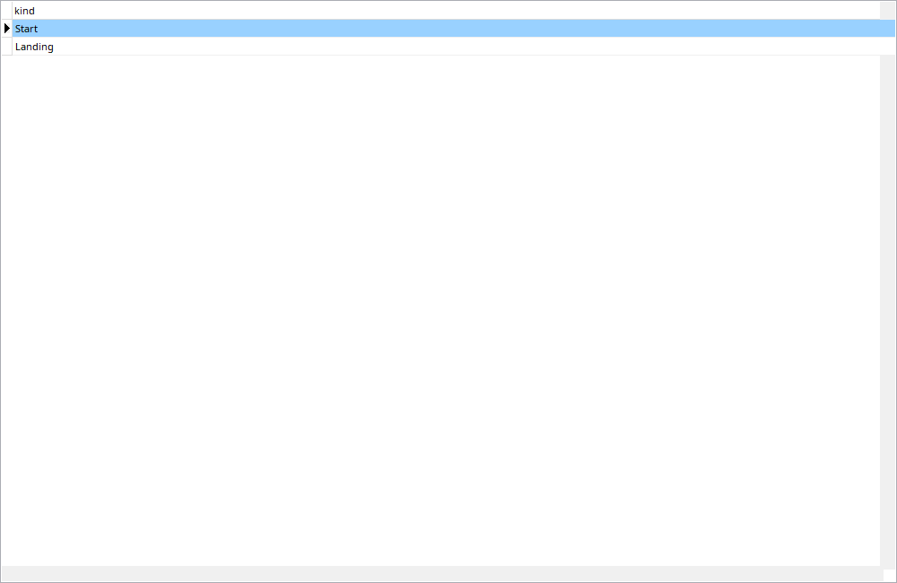

Rows distinguish liftoff and touchdown and retain available values at contact. Touch-and-go flights can contain multiple pairs. Select the intended contact before opening weather or AI analysis. Planned departure/destination is context, not proof of every contact location.
Liftoff is not the start of rotation, and a 500 ms touchdown sample may miss peak acceleration. Inspect samples before and after it. Takeoff/landing before-and-after windows are configured independently in Settings.
